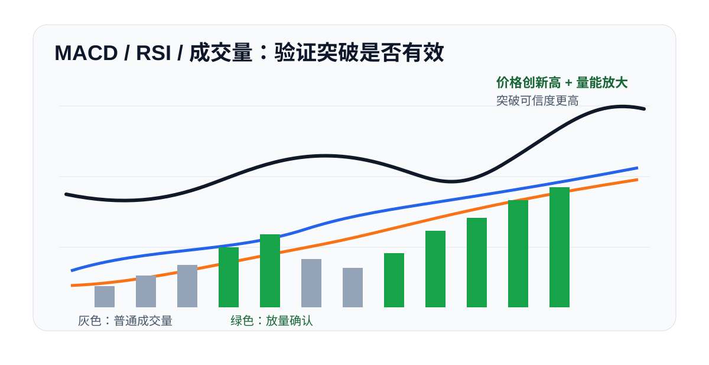

MACD 是常见的趋势动能指标。它不是单纯看价格涨跌，而是观察上涨或下跌背后的动能有没有增强。
01
MACD 主要看什么
MACD 通常包括快慢线、柱状图和零轴。新手可以先抓住三个重点：金叉死叉、柱状图变化、是否在零轴上方或下方。
- 金叉：短期动能改善。
- 死叉：短期动能转弱。
- 柱状图放大：当前方向的动能增强。
- 柱状图缩短：当前方向的动能减弱。
- 零轴上方：整体偏强。
- 零轴下方：整体偏弱。
02
背离怎么看
如果价格创新高，但 MACD 没有同步创新高，说明上涨动能可能减弱，这叫顶背离。如果价格创新低，但 MACD 没有同步创新低，说明下跌动能可能衰竭，这叫底背离。
背离不是立即反转信号，而是风险提示。它更适合用来提醒交易者减仓、收紧止损或等待确认。
03
实战使用
MACD 最适合配合趋势和关键位置使用。比如价格突破前高，MACD 柱状图同步放大，说明突破质量更高。如果价格突破但 MACD 背离，就要警惕假突破。
04
零轴很关键
很多人只看金叉和死叉，却忽略了零轴。零轴可以粗略理解为多空力量的分界线。MACD 在零轴上方金叉，通常比零轴下方金叉更强；MACD 在零轴下方死叉，通常比零轴上方死叉更弱。
如果 MACD 长时间运行在零轴上方，说明市场整体动能偏多。即使短线回调，只要没有跌破关键支撑，仍可能是趋势中的正常调整。
如果 MACD 长时间运行在零轴下方，说明市场整体偏弱。此时即使出现短线金叉，也要警惕只是反弹而不是反转。
05
柱状图怎么读
柱状图放大，说明当前方向的动能增强。红柱持续放大，代表上涨动能增强；绿柱持续放大，代表下跌动能增强。
柱状图缩短，说明动能减弱。价格还在上涨，但红柱开始缩短，说明上涨速度可能放缓。价格还在下跌，但绿柱开始缩短，说明下跌动能可能衰减。
06
背离案例
顶背离常见于行情末端。价格不断创新高，但 MACD 高点一次比一次低，说明价格涨了，但推动上涨的力量没有同步增强。这个时候不一定马上做空，但至少不适合重仓追高。
底背离常见于下跌末端。价格继续创新低，但 MACD 没有继续创新低，说明空头动能可能减弱。此时可以观察后续是否站上短期均线或突破下降趋势线。
07
搭配思路
MACD 管动能，MA 管方向，成交量管确认。实战中可以先用 MA 判断是否处在趋势环境，再用 MACD 观察趋势是否加速，最后用成交量确认突破是否真实。

08
新手误区
不要只看金叉死叉。横盘行情中 MACD 会频繁交叉，信号噪音很大。真正关键的是趋势背景、零轴位置、柱状图变化和价格结构是否一致。
也不要为了找到信号不断切换参数。参数越改越容易迎合过去走势，却不一定适合未来行情。新手先用常规参数理解逻辑更重要。
09
参考来源
- OKX：零基础学K线系列常用分析指标教学
https://www.okx.com/zh-hans/learn/zero-based-learning-market-analysis